waittime<-c(110, 54, 76, 123, 91, 101)
waittime[1] 110 54 76 123 91 101So far, we’ve discussed randomization, bootstrap, and mathematical models as methods to approximate/describe a sampling distribution and quantify variability, as well as how these methods can be used to answer research questions about categorical data. Now, we turn to how these three methods can be used to answer research questions for quantitative data, specifically a quantitative response. We’ll consider scenarios where there is a single numerical variable measured (one mean, Chapter 19), scenarios where a categorical explanatory variable with two possible values is recorded/assigned and a numerical response variable is observed (two independent means, Chapter 20), and scenarios in which a categorical explanatory variable with more than two possible values is recorded/assigned and a numerical response variable is observed (many means, Chapter 22). We’ll also encounter a new scenario: the difference between paired observations (Chapter 21). We’ll also meet two new distributions!
In all of these scenarios the parameter(s) of interest is the mean (\(\mu\)) of the population(s) under consideration. The natural estimator of the population mean is the sample mean, \(\bar X\). In Chapter 19 (and, spoiler alert, Chapter 21) we’ll have a single \(\mu\). In Chapter 20 we’ll have two \(\mu_i\)s, and in Chapter 22 we’ll have several \(\mu_i\)s.
Like we did with proportions, we’ll rely on the Central Limit Theorem to model \(\bar X\) using the normal distribution when we consider the mathematical model approaches. Also as with proportions, certain conditions must be met for this approach to be valid. We’ll discuss those conditions in each of the data scenarios. We’ll start with a single variable measured on each sample unit, where the observation results in a number.
Consider the following scenario. We’d like to learn about the true average wait time at Starbucks for a particular drink. To learn about this, we go to 6 randomly selected Starbucks locations in the same city, all at 10:00 am on Monday. At each location we order the same drink and observe the waiting time in seconds until it is prepared. The parameter of interest is
\(\mu =\)
The sample statistic is
\(\bar X =\)
Suppose we observed wait times of: 110, 54, 76, 123, 91, and 101. Based on our sample of six locations, the sample average wait time is \(\bar x = 92.5\) seconds with sample standard deviation \(s=24.76\) seconds.
Like we did with proportions, we can use the bootstrap method to approximate the variability we expect to see in sample means (calculated from 6 observations) from sample to sample:
Let’s go to R! We’ll start by setting up the data
waittime<-c(110, 54, 76, 123, 91, 101)
waittime[1] 110 54 76 123 91 101Now, we’ll find the observed sample mean and standard deviation from our 6 observations:
mean(waittime) [1] 92.5sd(waittime)[1] 24.76086We’ll draw bootstrap samples just like we did with proportions, draw repeated samples of size 6 from our data.
library(ggplot2)
#Set up an empty data set with 2 columns: simulation number, bootstrap mean#
boot.samples<-data.frame(sim=1:1000,mean_WT=NA)
#For each row in the data set, draw a bootstrap sample from the original data and find#
# mean_WT#
for(i in 1:1000){
boot.samples$mean_WT[i]<-mean(sample(waittime,size=6,replace=TRUE))
}
#Histogram#
boot.hist<-ggplot(boot.samples, aes(mean_WT)) + geom_histogram(binwidth=5)
#See the plot#
boot.hist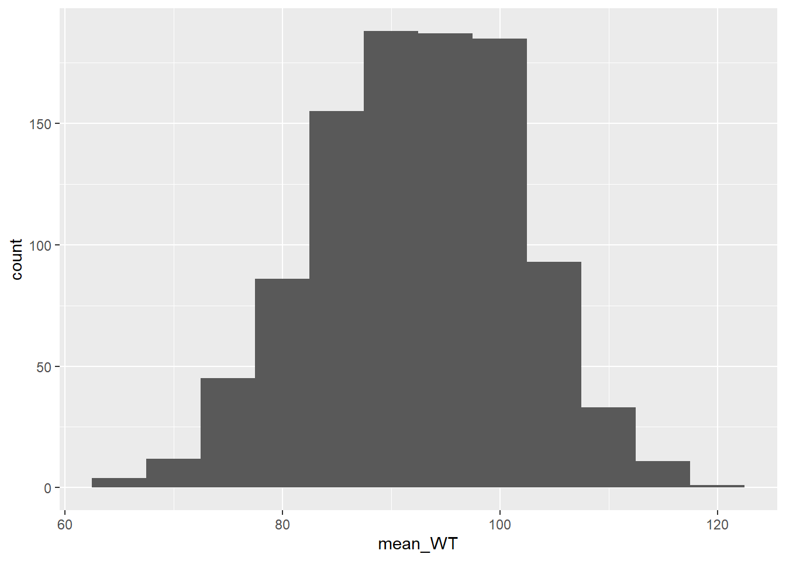
#To get the bootstrap percentile confidence interval, #
#start by ranking the bootstrap means from smallest to largest #
rankmean<-sort(boot.samples$mean_WT)
#Lower endpoint is the 2.5th percentile (95% confidence)#
lower<-rankmean[25]
lower[1] 73.16667#Upper endpoint is the 97.5th percentile (95% confidence)#
upper<-rankmean[975]
upper[1] 110.8333This will give us a bootstrap percentile confidence interval.
The histogram of the bootstrapped sample means is relatively bell-shape, so we could also find a bootstrap SE confidence interval. For that, we’ll need the bootstrap SE (the standard deviation of the bootstrapped sample means).
#Bootstrap standard error of the mean#
sd(rankmean)[1] 9.719793
The bootstrap method works for other statistics as well (even when the mathematical model does not)–like standard deviation, median, range, etc. With other stats we won’t necessarily end up a bell-shaped distribution. That’s okay–we can use the percentile method.
For example, we could use the bootstrap approach to get a confidence interval for \(\sigma\), the true standard deviation of wait time.
#Set up an empty data set with 2 columns: simulation number, bootstrap SD#
boot.samples<-data.frame(sim=1:1000, sd_WT=NA)
#For each row in the data set, draw a bootstrap sample from the original data and find#
# sd_WT#
for(i in 1:1000){
boot.samples$sd_WT[i]<-sd(sample(waittime,size=6,replace=TRUE))
}
#Histogram#
boot.hist<-ggplot(boot.samples, aes(sd_WT)) + geom_histogram(binwidth=2)
#See the plot#
boot.hist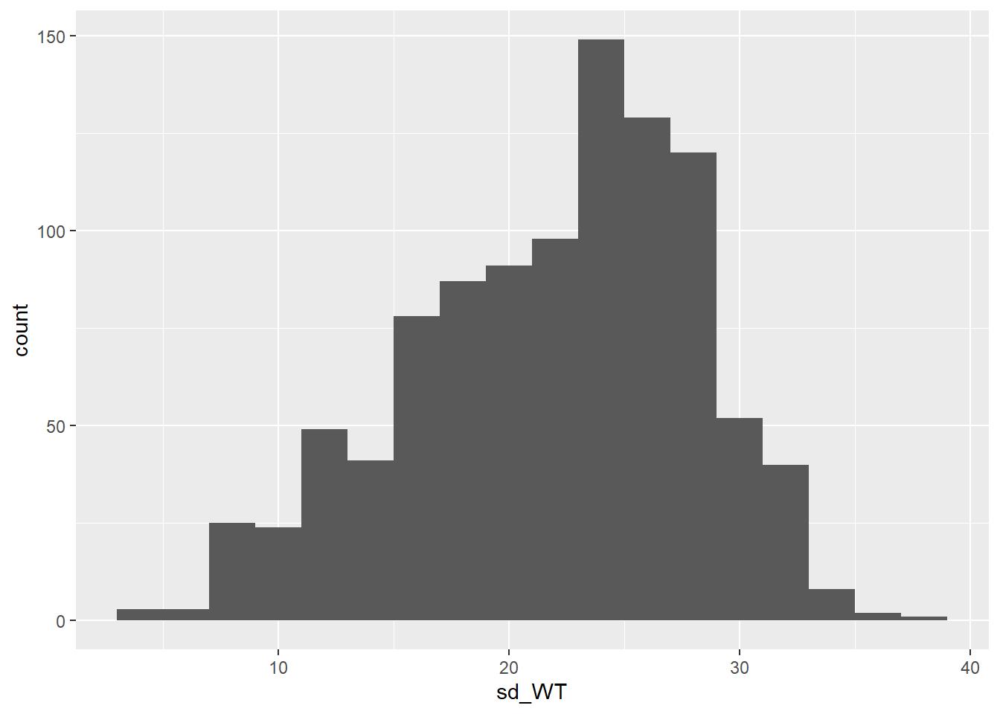
#To get the bootstrap percentile confidence interval, #
#start by ranking the bootstrap sds from smallest to largest #
ranksd<-sort(boot.samples$sd_WT)
#Lower endpoint is the 5th percentile (90% confidence)#
lower<-ranksd[50]
lower[1] 11.77568#Upper endpont is the 95th percentile (90% confidence)#
upper<-ranksd[950]
upper[1] 31.00806
Example: Wildlife researchers trapped and measured six adult male collared lemmings. The data (in mm) are: 104, 99, 112, 115, 96, 109. Use bootstrap methods to find a 95% confidence interval for the true mean size of adult male collared lemmings. Use both the percentile approach and the bootstrap SE approach.
Like with proportions, we’ll use the Central Limit Theorem here.
This presents a few complications:
The natural fix is to use \(s\) (the sample standard deviation) in place of \(\sigma\), so \(SE=\)
But this leads to yet another complication: the normal distribution isn’t quite right. We end up with a distribution that has heavier tails than the normal.
Instead, we use the \(t\)-distribution which, like the chi-squared, has the degrees of freedom parameter:
degrees of freedom determines the shape of the \(t\), with the distribution getting closer and closer to the normal as the \(df\) increase
Demo: Compare t and Z
As \(df \rightarrow \infty\), the \(t\) goes to the standard normal.
In this scenario of a single mean, \(df=\)
R function: pt(q,df)
Let’s work through confidence intervals for a single mean by way of example. Suppose we want to get a sense of the average number of goals scored per game in the NHL, and the average margin of victory. We record data on all 44 NHL games played over a Thursday-Monday in December. Let’s first look at the number of goals. The data are in Canvas.
We’ll start with visualizing the data in R
#Read in the NHL data#
hockey<-read.csv("NHLGames.csv",header=TRUE)
head(hockey) Goals MarginVictory
1 6 2
2 3 1
3 9 1
4 7 3
5 6 2
6 5 1library(ggplot2)
#Summarize Number of Goals#
summary(hockey$Goals) Min. 1st Qu. Median Mean 3rd Qu. Max.
3.000 5.000 6.000 6.114 7.000 9.000 sGoals<-sd(hockey$Goals)
sGoals[1] 1.728232Goals.dot<-ggplot(hockey, aes(hockey$Goals)) + geom_dotplot()
Goals.dotWarning: Use of `hockey$Goals` is discouraged.
ℹ Use `Goals` instead.Bin width defaults to 1/30 of the range of the data. Pick better value with
`binwidth`.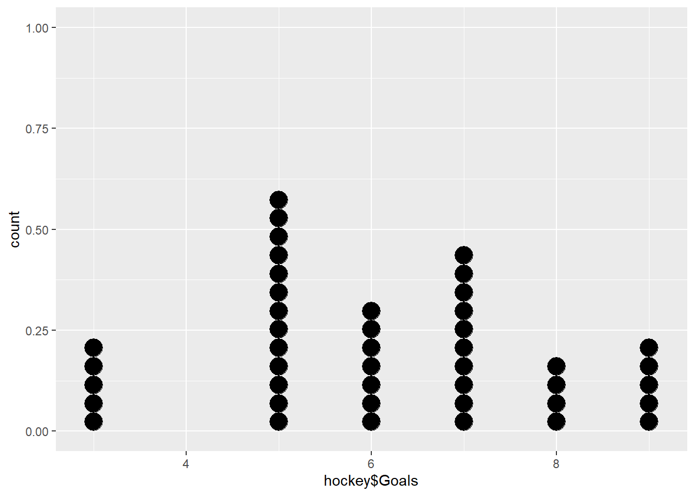
Are the conditions for the mathematical model met?
The general form of the confidence interval hasn’t changed:
\[
\hbox{point estimate} \pm \hbox{multiplier} \times SE
\]
In our data set set, there are \(n=44\) games.
#For a confidence interval, need the multiplier for a 95% confidence interval, puts 0.025 in left tail#
qt(0.05, df=43, lower.tail=FALSE)[1] 1.681071
What about a 90% confidence interval? What would change?
What about a 95% confidence interval for margin of victory?
#Summarize Margin of Victory#
summary(hockey$MarginVictory) Min. 1st Qu. Median Mean 3rd Qu. Max.
1.000 1.000 2.000 2.159 3.000 6.000 Margin.dot<-ggplot(hockey, aes(hockey$MarginVictory)) + geom_dotplot()
Margin.dotWarning: Use of `hockey$MarginVictory` is discouraged.
ℹ Use `MarginVictory` instead.Bin width defaults to 1/30 of the range of the data. Pick better value with
`binwidth`.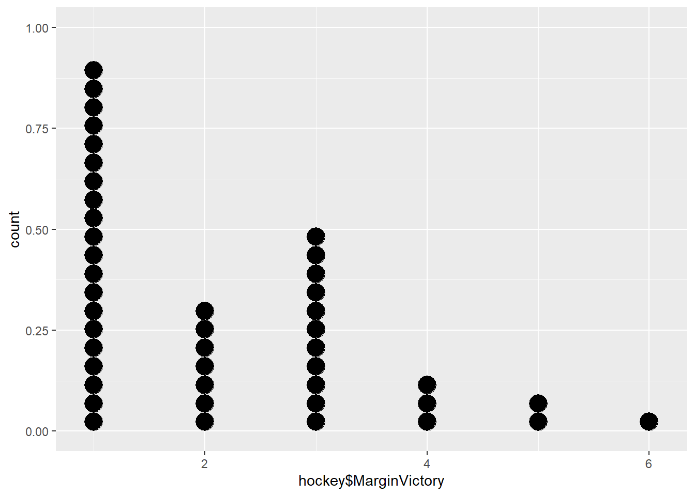
sMV<-sd(hockey$MarginVictory)
sMV[1] 1.328457
Just as with confidence intervals, the form of the test statistic doesn’t (typically) change as we move from data type to data type:
\[ \hbox{test statistic} = \frac{\hbox{observed value - null value}}{SE} \] So now,
If the null hypothesis is true and the conditions are met, then our test statistic follows a \(t-\)distribution with \(df = n-1\). The conditions are the same: independent observations and a large enough sample size with no extreme outliers. We can use the R function pt(T,df=) to get p-values.
Example: The Lincoln Marathon is the 51st largest marathon in the US, and is a qualifier for the Boston Marathon. From 2003 to 2019, the average finish time was 253.25 minutes (4 hours and 13 minutes, 15 seconds). The race was not run in 2020. We want to see if the break changed the average finish time. We took a random sample of 50 finishers from the 2021 race. For this random sample of 50, \(\bar x = 261.38\) minutes and \(s=51.87\) minutes.
Example: Consider a manufacturing process for hypodermic needles used for blood donation. The needles need to have a diameter of 1.65 mm. If the needles are too big, they hurt the donor. Too small, and they’ll rupture the red blood cells, making the donated blood useless. During every shift, quality control staff take a random sample of several needles and measure their diameter. If there’s a problem, they shut down the manufacturing process to correct it. Suppose the most recent sample of 35 needles had an average diameter of 1.64 mm and a standard deviation of 0.07 mm. Suppose the diameters of needles have a bell-shaped distribution. Based on these data, should the process be shut down?
Example: The General Social Survey (GSS) is a survey of a representative sample of U.S. adults who are not institutionalized. A 2018 General Social Survey asked a random sample of 1,118 adults how often they contacted their closest friend by either phone, internet, other communication device, or face-to-face. Of the 1,118 responses, the average number of times per week the respondents contacted their closest friend was 2.87, with a standard deviation of 2.46. The sample data are not strongly skewed. We want to estimate the mean number of closest friend contacts per week.
Aside: How do we know from the sample mean and standard deviation that the distribution of contact times cannot be bell-shaped? Why is it still okay to use the mathematical model?
We can also do these in R using t.test, but we’ll need the full data set, not just the summary statistics.
For the NHL data,
t.test(hockey$Goals, mu=5, alternative="greater")
One Sample t-test
data: hockey$Goals
t = 4.2743, df = 43, p-value = 5.221e-05
alternative hypothesis: true mean is greater than 5
95 percent confidence interval:
5.675649 Inf
sample estimates:
mean of x
6.113636 Now, we’ll extend the methods for a single mean to differences in population means that come from two groups. So, we’ll now focus on constructing hypothesis tests about and estimating the function of parameters \(\mu_1 - \mu_2\), where \(\mu_1\) is the mean of Group 1 an \(\mu_2\) is the mean of Group 2. A reasonable point estimate is \(\bar x_1 - \bar x_2\), the difference in sample means.
As we did with two proportions, we’ll look at analysis three different ways: randomization test; bootstrap to find an interval estimate; mathematical framework for tests and confidence intervals (assuming the conditions are met to use a normal approximation. One note: one of the conditions for these techniques (no matter which) is the groups are independent. What happens in Group 1 has no bearing on Group 2. If there is any dependence among the groups (twin studies, before-and-after studies, for example) these are not appropriate. This was not really a concern with proportions, but can occur quite naturally with means. We’ll consider dependence between the groups in a future section.
When we were working with proportions, we carried out a randomization test using two colors of cards. One color represented success, and the other color represented failure. We shuffled the cards, and dealt them into two stacks, representing our two groups. We then found the proportion of successes in each stack, and took the difference in proportions. We then did this shuffling/dealing many times. We’ll see through an example how our process changes when dealing with quantitative data.
Example: The research question we are interested in investigating is whether playing violent video games lead people to more or less aggressive behavior. Hollingdale and Greitemeyer (2014) approached the question in this way. They randomly assigned 49 students from a UK university to play Call of Duty: Modern Warfare (violent) and 52 students to play LittleBigPlanet (not violent). After 30 minutes playing the video games, the subjects were asked to complete a marketing survey investigating a new hot chili sauce recipe. They were told to prepare some chili sauce for a taste tester and that the taste tester “couldn’t stand hot chili sauce but were taking part due to good payment.” They were then presented with that appeared to be a very hot chili sauce and asked to spoon what they thought would be an appropriate amount into a bowl for a new recipe. The amount of chili sauce was weighed in grams after the participant left the experiment. The amount of sauce was used as a measure of aggression: the more chili sauce, the greater the subject’s aggression.
The resulting data are:
| Group | \(n\) | Mean | SD | Min | Max |
|---|---|---|---|---|---|
| Violent | 49 | 16.12 | 15.30 | 1 | 63 |
| Nonviolent | 52 | 9.06 | 7.65 | 0 | 38 |
So our observed statistic is:
Our goal is the same as it was with proportions: to determine whether the observed difference in sample means is likely to have occurred by chance if the null hypothesis is really true.
Just like we shuffled cards in the two-proportions case, we’re going to have cards again. Like before, the shuffling implements the null hypothesis model–there is no effect of the violent video game. The amount of chili sauce selected doesn’t depend on whether or not the participant just played a violent game. We’d sometimes expect participants to use slightly more chili sauce if they’d just played a violent game (\(\bar x_{\tiny{\hbox{violent}}} > \bar x_{\tiny{\hbox{nonviolent}}}\) and sometimes expect participants to use slightly less chili sauce if they’d just played a violent video game (\(\bar x_{\tiny{\hbox{violent}}} < \bar x_{\tiny{\hbox{nonviolent}}}\) just due to natural variability.
Before, we looked at red and black cards, shuffled, and dealt into two stacks representing our two groups. Now, color isn’t enough. Instead, we’ll still have \(n_{total} = 49 + 52\) total cards, but we’ll write on the cards the observed amount of chili sauce. Then shuffle, and deal into stacks. One stack will get 49 cards (representing the 49 violent players) and the other will get 52 cards (representing the 52 nonviolent players). We’ll find the difference in sample means after the shuffling/dealing. We’ll repeat this process many times, and look to see how unusual our observed \(\bar x_{\hbox{\tiny{violent}}} - \bar x_{\hbox{\tiny{nonviolent}}} = 7.065\) is.
We’ll start by loading the necessary packages and reading in the data.
library(ggplot2)
library(mosaic)chili<-read.csv("chili.csv",header=TRUE)
head(chili) VideoGame ChiliSauce
1 violent 42
2 violent 4
3 violent 27
4 violent 2
5 violent 10
6 violent 5#Get the sample mean for each group#
mean(ChiliSauce~VideoGame, data=chili)nonviolent violent
9.057692 16.122449 #Find the difference in sample means#
obs_diff <- diff(mean(ChiliSauce~VideoGame, data=chili))
obs_diff violent
7.064757 #Construct box plots for each group#
gf_boxplot(ChiliSauce~VideoGame,data=chili)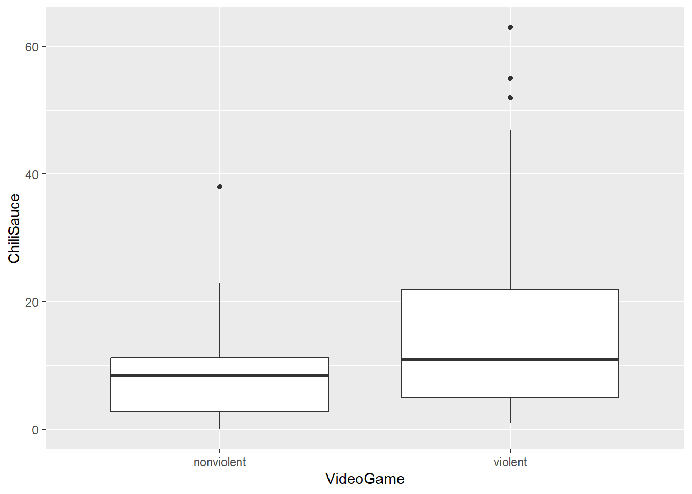
#Scramble the treatment groups with respect to outcome many times to get the null distribution#
null_dist <- do(1000)*diff(mean(ChiliSauce~shuffle(VideoGame), data=chili))
head(null_dist) violent
1 0.5045133
2 -2.8449765
3 0.2864992
4 -0.6450157
5 -4.6881868
6 1.6936813#Histogram of the null distribution#
ggplot(data=null_dist) + geom_histogram(mapping=aes(x=violent))+
xlab("Difference in means") +
geom_vline(xintercept = obs_diff, linetype=2, color="blue") +
geom_vline(xintercept = -obs_diff, linetype=2, color="blue")`stat_bin()` using `bins = 30`. Pick better value with `binwidth`.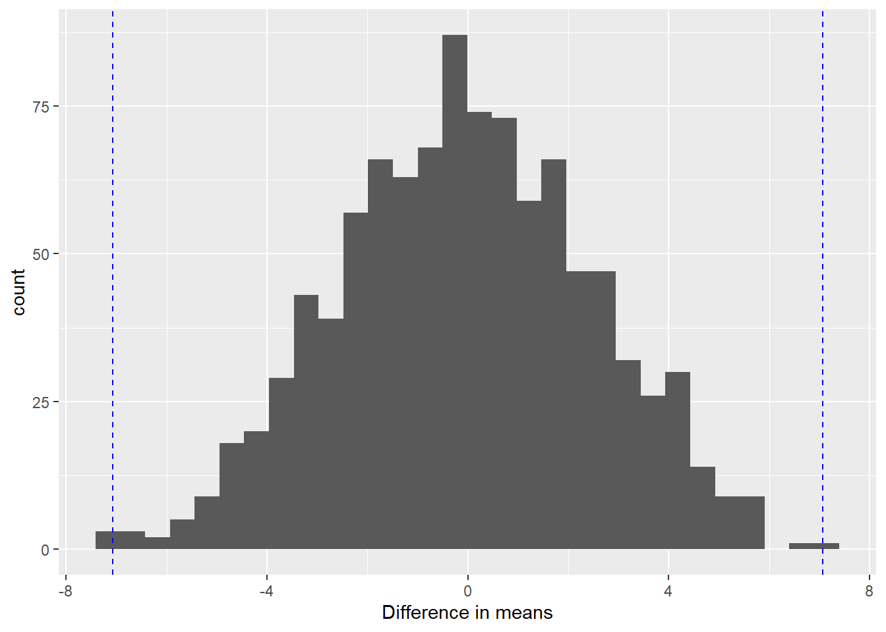
#Calculate the proportion of simulated differences in mean as or more extreme than obs#
prop(~violent >= obs_diff, data=null_dist)+prop(~violent <= -obs_diff, data=null_dist)prop_TRUE
0.003 #Another way to visualize!#
gf_histogram(~violent, fill = ~(abs(violent) >= obs_diff), data=null_dist,
binwidth=0.5,xlab="Distribution of difference in means under the null hypothesis")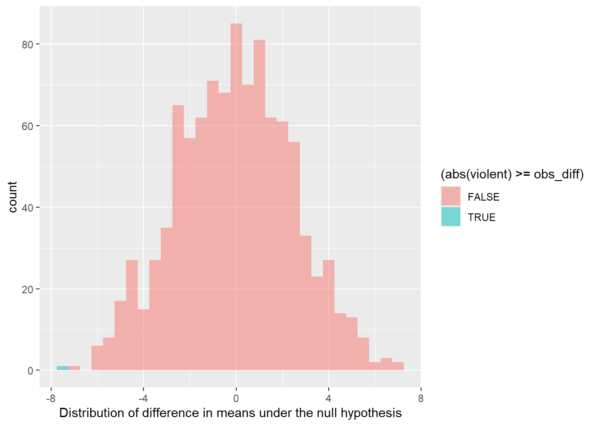
When we used bootstrapping to find confidence intervals for the difference in two proportions, we took a bootstrap sample separately from each group and calculated the difference in the resulting proportions. We’re going to do the same thing here–take a bootstrap sample from each group, find the two sample bootstrap means, and then find the difference in the bootstrap means. Doing this over and over again will allow us to explore the variability/sampling distribution of the difference in sample means.
Example: A random sample of college baseball players and a random sample of (male) college soccer players were obtained independently and weighed. The table below shows the weights (in pounds) (also a .csv file in Canvas).
| Baseball | Soccer | Baseball | Soccer |
|---|---|---|---|
| 190 | 165 | 186 | 156 |
| 200 | 190 | 210 | 168 |
| 187 | 185 | 198 | 173 |
| 182 | 187 | 180 | 158 |
| 192 | 183 | 182 | 150 |
| 205 | 189 | 193 | 172 |
| 185 | 170 | 200 | 180 |
| 177 | 182 | 195 | 184 |
We are interested in estimating the differences in mean weight between baseball players and soccer players.
Let’s look at R, and read in the data.
athletes<-read.csv("Athletes.csv",header=TRUE)
head(athletes) Baseball Soccer
1 190 165
2 200 190
3 187 185
4 182 187
5 192 183
6 205 189#observed mean and sd#
basemean<-mean(athletes$Baseball)
basemean[1] 191.375basesd<-sd(athletes$Baseball)
basesd[1] 9.464847soccermean<-mean(athletes$Soccer)
soccermean[1] 174.5soccersd<-sd(athletes$Soccer)
soccersd[1] 12.49533#Set up an empty data set with 4 columns: simulation number,
# bootstrap mean for baseball, bootstrap mean for soccer, difference#
boot.samples<-data.frame(sim=1:1000,mean_base=NA,mean_soccer=NA,diff=NA)
#For each row in the data set, draw a bootstrap sample from the original data and find#
# mean_base and mean_soccer#
for(i in 1:1000){
boot.samples$mean_base[i]<-mean(sample(athletes$Baseball,size=16,replace=TRUE))
boot.samples$mean_soccer[i]<-mean(sample(athletes$Soccer,size=16,replace=TRUE))
boot.samples$diff[i]<-boot.samples$mean_base[i]-boot.samples$mean_soccer[i]
}
head(boot.samples) sim mean_base mean_soccer diff
1 1 188.1875 168.6875 19.5000
2 2 192.5625 177.1875 15.3750
3 3 191.3750 171.8125 19.5625
4 4 192.5625 172.6250 19.9375
5 5 192.6875 174.2500 18.4375
6 6 188.9375 175.7500 13.1875#Histogram#
boot.hist<-ggplot(boot.samples, aes(diff)) + geom_histogram(binwidth=2)
#See the plot#
boot.hist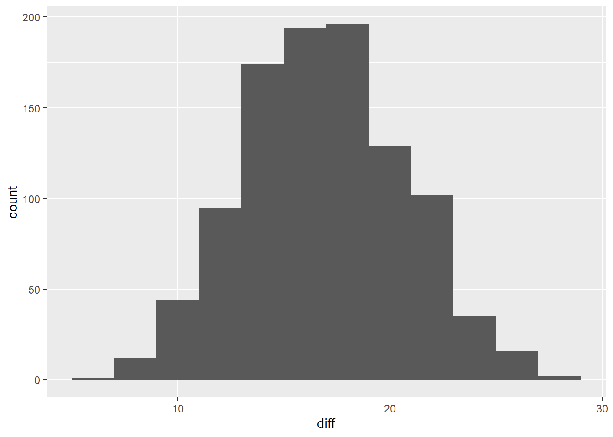
#To get the bootstrap percentile confidence interval, #
#start by ranking the bootstrap means from smallest to largest #
rankmean<-sort(boot.samples$diff)
#Lower endpoint is the 2.5th percentile (95% confidence)#
lower<-rankmean[25]
lower[1] 9.625#Upper endpont is the 97.5th percentile (95% confidence)#
upper<-rankmean[975]
upper[1] 24.5#Bootstrap standard error of the mean#
sd(rankmean)[1] 3.703305So we can get a bootstrap percentile interval or a bootstrap SE interval.
Practice: (from book, page 346-348) Does treatment using embryonic stem cells (ESCs) help improve heart function following a heart attack? The data are in the library . Try to find a 95% confidence interval for \(\mu_{ESC} - \mu_{Control}\) using the bootstrap percentile confidence interval and the bootstrap SE confidence interval.
More Practice: The Canvas file ‘shoes.csv’ contains data on many styles of athletic shoes. Find a confidence interval for the difference in mean price for road versus trail shoes.
Just like with mathematical model methods for single means, we need to check conditions to determine whether we can the \(t\)-distribution to construct tests and form confidence intervals for the difference in means.
As with tests for a single mean (and one proportion, and two proportions), our test statistic will have the usual form: \[ \hbox{test statistic} = \frac{\hbox{observed value - hypothesized value}}{SE} \] In the case of two means, this is \[ T = \frac{(\bar x_1 - \bar x_2) - 0}{\sqrt{\frac{s_1^2}{n_1} + \frac{s_2^2}{n_2}}} \] When the null hypothesis is true and the conditions are met, \(T\) has a \(t\)-distribution with \(df=\min(n_1-1,n_2-1)\).
Confidence intervals will also have the same form: \[ \hbox{observed statistic} \pm \hbox{multiplier} \times SE \] For this specific situation of comparing two independent means, this is \[ (\bar x_1 - \bar x_2) \pm t^*_{df} \times \sqrt{\frac{s_1^2}{n_1} + \frac{s^2_2}{n_2}} \] and we’ll again use \(df=\min(n_1-1,n_2-1)\) (or let R calculate it for us).
With two proportions, our SE depending on whether we were doing a hypothesis test or calculating a confidence interval. Here, it doesn’t. Any guesses why?
Example: The data set SleepStudy contains data on 253 students who did skills tests to measure cognitive function, completed a survey about attitude and habits, and kept a sleep diary. The data were reported in Onyper, et al. (2012). There are lots of different potential variables to consider. The data set includes:
Let’s consider the variables GPA and stress (coded normal or high). We’d like to know if there is convincing evidence that those with high stress levels have a different mean GPA than those with normal stress levels.
\[ T = \frac{(\bar x_1 - \bar x_2) - 0}{\sqrt{\frac{s_1^2}{n_1} + \frac{s_2^2}{n_2}}} = \hspace{90mm} \]
sleep<-read.csv("SleepStudy.csv",header=TRUE)
#Those with normal stress#
summary(sleep$GPA[sleep$Stress=="normal"]) Min. 1st Qu. Median Mean 3rd Qu. Max.
2.000 3.000 3.250 3.209 3.500 4.000 sum(with(sleep,Stress=="normal"))[1] 197sd(sleep$GPA[sleep$Stress=="normal"])[1] 0.412318#Those with high stress#
summary(sleep$GPA[sleep$Stress=="high"]) Min. 1st Qu. Median Mean 3rd Qu. Max.
2.500 3.065 3.350 3.366 3.603 4.000 sum(with(sleep,Stress=="high"))[1] 56sd(sleep$GPA[sleep$Stress=="high"])[1] 0.3513277dotplot<-ggplot(sleep, aes(GPA)) + geom_dotplot(aes(color=Stress)) + facet_grid(~Stress)
dotplotBin width defaults to 1/30 of the range of the data. Pick better value with
`binwidth`.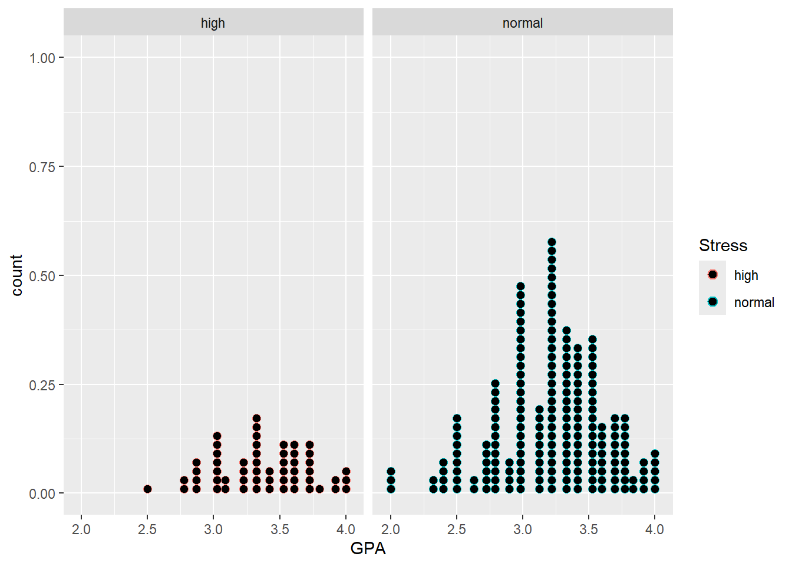
And we can get the p-value:
2*pt(-2.835,df=55)[1] 0.00639864In R, we can carry out this test very easily:
t.test(GPA~Stress,data=sleep)
Welch Two Sample t-test
data: GPA by Stress
t = 2.8397, df = 102.11, p-value = 0.005451
alternative hypothesis: true difference in means between group high and group normal is not equal to 0
95 percent confidence interval:
0.04741781 0.26711265
sample estimates:
mean in group high mean in group normal
3.366250 3.208985
We can also use the subset function to restrict our attention to a specific value of another variable. For example, suppose we want to determine whether average hours of weekday sleep (WeekdaySleep) differs between those who have at least one early class and those who do not (EarlyClass; 0=no; 1=yes). However, we want to restrict our attention only to those who consider themselves Night Owls (LarkOwl=Owl). We could do this with:
sleep2<-subset(sleep,LarkOwl=='Owl')
head(sleep2) Gender ClassYear LarkOwl NumEarlyClass EarlyClass GPA ClassesMissed
3 0 4 Owl 0 0 2.97 12
5 0 4 Owl 0 0 3.20 4
20 1 3 Owl 3 1 2.80 20
26 1 2 Owl 0 0 3.07 20
27 1 2 Owl 4 1 3.00 10
46 1 3 Owl 0 0 3.50 2
CognitionZscore PoorSleepQuality DepressionScore AnxietyScore StressScore
3 0.38 18 18 18 9
5 1.22 9 7 25 14
20 -0.57 15 6 5 10
26 -0.62 9 23 5 16
27 0.16 5 14 13 14
46 0.47 6 9 5 19
DepressionStatus AnxietyStatus Stress DASScore Happiness AlcoholUse Drinks
3 moderate severe normal 45 17 Light 3
5 normal severe normal 46 15 Moderate 4
20 normal normal normal 21 19 Moderate 7
26 severe normal high 44 24 Abstain 0
27 moderate moderate normal 41 28 Moderate 8
46 normal normal high 33 24 Moderate 9
WeekdayBed WeekdayRise WeekdaySleep WeekendBed WeekendRise WeekendSleep
3 27.44 6.55 3.00 28.00 12.59 10.09
5 25.90 8.67 6.09 23.75 9.50 7.00
20 25.25 8.12 7.20 25.67 10.50 8.00
26 24.70 11.02 10.32 27.50 12.25 8.75
27 24.40 7.95 8.45 24.00 11.75 9.50
46 24.95 8.86 7.97 27.00 11.63 9.13
AverageSleep AllNighter
3 5.02 0
5 6.35 0
20 7.43 0
26 9.87 0
27 8.75 0
46 8.30 0t.test(WeekdaySleep~EarlyClass, data=sleep2)
Welch Two Sample t-test
data: WeekdaySleep by EarlyClass
t = 0.79051, df = 30.009, p-value = 0.4354
alternative hypothesis: true difference in means between group 0 and group 1 is not equal to 0
95 percent confidence interval:
-0.5768755 1.3055071
sample estimates:
mean in group 0 mean in group 1
7.986316 7.622000 For confidence intervals, let’s go back to the baseball and soccer players. The summary statistics are:
| Group | \(n\) | Mean | SD |
|---|---|---|---|
| Baseball | 16 | 191.375 | 9.465 |
| Soccer | 16 | 174.5 | 12.495 |
We do need to check the conditions to see if we can use the mathematical model. We can use dotplot to check for extreme outliers. However, this data set is structured differently than we have seen before, and we’ll need to restructure. There are two ways to do this, but one will require a couple of new packages: tidyr and tidyverse.
library(tidyverse)
library(tidyr)One way to restructure:
athletes2 <- athletes %>% pivot_longer(cols=c('Baseball','Soccer'), names_to='Sport',values_to='Weight')
athletes2# A tibble: 32 × 2
Sport Weight
<chr> <int>
1 Baseball 190
2 Soccer 165
3 Baseball 200
4 Soccer 190
5 Baseball 187
6 Soccer 185
7 Baseball 182
8 Soccer 187
9 Baseball 192
10 Soccer 183
# ℹ 22 more rowsAnother way:
athletes3<-cbind(stack(athletes[1:2]))
athletes3 values ind
1 190 Baseball
2 200 Baseball
3 187 Baseball
4 182 Baseball
5 192 Baseball
6 205 Baseball
7 185 Baseball
8 177 Baseball
9 186 Baseball
10 210 Baseball
11 198 Baseball
12 180 Baseball
13 182 Baseball
14 193 Baseball
15 200 Baseball
16 195 Baseball
17 165 Soccer
18 190 Soccer
19 185 Soccer
20 187 Soccer
21 183 Soccer
22 189 Soccer
23 170 Soccer
24 182 Soccer
25 156 Soccer
26 168 Soccer
27 173 Soccer
28 158 Soccer
29 150 Soccer
30 172 Soccer
31 180 Soccer
32 184 Soccer#rename columns#
#Do I need to do this? No. Does it help me keep track of which variable is which? Yes#
colnames(athletes3)[1]="weight"
colnames(athletes3)[2]="sport"
athletes3 weight sport
1 190 Baseball
2 200 Baseball
3 187 Baseball
4 182 Baseball
5 192 Baseball
6 205 Baseball
7 185 Baseball
8 177 Baseball
9 186 Baseball
10 210 Baseball
11 198 Baseball
12 180 Baseball
13 182 Baseball
14 193 Baseball
15 200 Baseball
16 195 Baseball
17 165 Soccer
18 190 Soccer
19 185 Soccer
20 187 Soccer
21 183 Soccer
22 189 Soccer
23 170 Soccer
24 182 Soccer
25 156 Soccer
26 168 Soccer
27 173 Soccer
28 158 Soccer
29 150 Soccer
30 172 Soccer
31 180 Soccer
32 184 SoccerNow we can get the dotplots.
dotplot<-ggplot(athletes2, aes(Weight)) + geom_dotplot(aes(color=Sport)) + facet_grid(~Sport)
dotplotBin width defaults to 1/30 of the range of the data. Pick better value with
`binwidth`.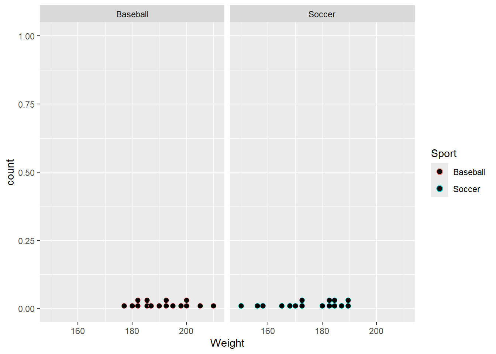
We can also get the confidence interval in R:
t.test(Weight~Sport,data=athletes2)
Welch Two Sample t-test
data: Weight by Sport
t = 4.3061, df = 27.95, p-value = 0.0001846
alternative hypothesis: true difference in means between group Baseball and group Soccer is not equal to 0
95 percent confidence interval:
8.846974 24.903026
sample estimates:
mean in group Baseball mean in group Soccer
191.375 174.500 By default, R calculates 95% confidence intervals. We can change this with the conf.level= statement:
t.test(Weight~Sport,data=athletes2,conf.level=0.90)
Welch Two Sample t-test
data: Weight by Sport
t = 4.3061, df = 27.95, p-value = 0.0001846
alternative hypothesis: true difference in means between group Baseball and group Soccer is not equal to 0
90 percent confidence interval:
10.20813 23.54187
sample estimates:
mean in group Baseball mean in group Soccer
191.375 174.500 For practice, find a research question you can answer using variables in the sleep study data.
Everything we’ve done so far has assumed independence among observations. If we only had one group, it was just independence among observations. If we had two or more groups, it was independence between and within groups. Now, we’ll turn our attention to a common situation: dependence between groups. Specifically, a particular dependency–pairing. This occurs in before/after studies, other studies in which subjects are matched. For example, considering the price of a item purchased from two different retailers.
In these situations, we generally take the difference between the two values, and consider the difference as our observation. So, for example, if we want to compare cost of textbooks between the campus bookstore and Amazon, we’d randomly select a set of book titles, and find their price at both the bookstore and Amazon. We’d find the difference in price, and use those differences as our observations.
Note that we’re distinguishing between difference in means (Chapter 20) and mean difference (Chapter 21).
- Observed Statistics:
Good news: we’ve already seen how to construct mathematical model tests and confidence intervals here! We just use the same techniques we used for a single mean (Chapter 19), but on the differences.
However, randomization tests didn’t really work with one mean in Chapter 19 because there was nothing to randomize. They will work here!
Example: Suppose you are playing baseball and hit a hard line drive. You want to turn a single into a double. Does the path you take to round first base make a difference? A masters thesis way back in 1970 considered the difference between a narrow angle'' and awide angle’’ around first base. Suppose we have 22 baseball players who have volunteered to participate. There are a couple ways we could design an experiment to see if there is a difference.
The second option is what the thesis writer did–he randomly determined the angle the player would take first. He then used a stopwatch the time the run from going from a spot 35 feet past home to a spot 15 feet before 2nd base. After a rest period, the runner then ran the second angle. This controls for runner-to-runner variability. It’s important to randomize the order of the treatments, where possible! (This isn’t possible in before-and-after type studies.)
Let’s look at the data:

Parameter of interest:
Hypotheses of interest:
Observed statistic:
Like before, we’re trying to determine if it’s surprising to see such a large difference as \(\bar x_d = 0.075\) just by chance, if running strategy has no effect on running time.
Here’s how the randomization test works: if running strategy really doesn’t make a difference, then the two times for each runner were going to be the same two times regardless of which strategy was used. Any difference was just by chance, perhaps which one they ran first. That is, it really doesn’t matter which value we call wide angle time and which value we call narrow angle time–the two times are completely interchangeable or swappable. This idea of swapping is how we’ll do the randomization.
In the two sample randomization test, the explanatory variable was randomly assigned to the response. We shuffled all the cards, and randomly dealt them into the two stacks. Here, randomization occurs within an observational unit (in our example, a baseball player). So, the two times will stay assigned to the same player, but we’ll randomly decide which time is narrow and which is wide using a coin flip. If the coin comes up, we swap the times. If the coin comes up tails, we don’t swap.
We’re going to do these in the applet, because I think it’s easiest to see the swapping. Let’s try it:
The bootstrap approach to finding a confidence interval for \(\mu_d\) is almost identical to the method for finding a bootstrap confidence interval for a single mean. The difference is in the interpretation.
bases<-read.csv("bases.csv",header=TRUE)
bases id narrow wide
1 1 5.50 5.55
2 2 5.70 5.75
3 3 5.60 5.50
4 4 5.50 5.40
5 5 5.85 5.70
6 6 5.55 5.60
7 7 5.40 5.35
8 8 5.50 5.35
9 9 5.15 5.00
10 10 5.80 5.70
11 11 5.20 5.10
12 12 5.55 5.45
13 13 5.35 5.45
14 14 5.00 4.95
15 15 5.50 5.40
16 16 5.55 5.50
17 17 5.55 5.35
18 18 5.50 5.55
19 19 5.45 5.25
20 20 5.60 5.40
21 21 5.65 5.55
22 22 6.30 6.25bases$diff<-bases$narrow-bases$wide
##Bootstrap confidence intervals##
#Set up an empty data set with 2 columns: simulation number, bootstrap mean#
boot.samples<-data.frame(sim=1:1000,mean_diff=NA)
#For each row in the data set, draw a bootstrap sample from the original data and find#
# mean_diff#
for(i in 1:1000){
boot.samples$mean_diff[i]<-mean(sample(bases$diff,size=22,replace=TRUE))
}
#Histogram#
boot.hist<-ggplot(boot.samples, aes(mean_diff)) + geom_histogram(binwidth=0.005)
#See the plot#
boot.hist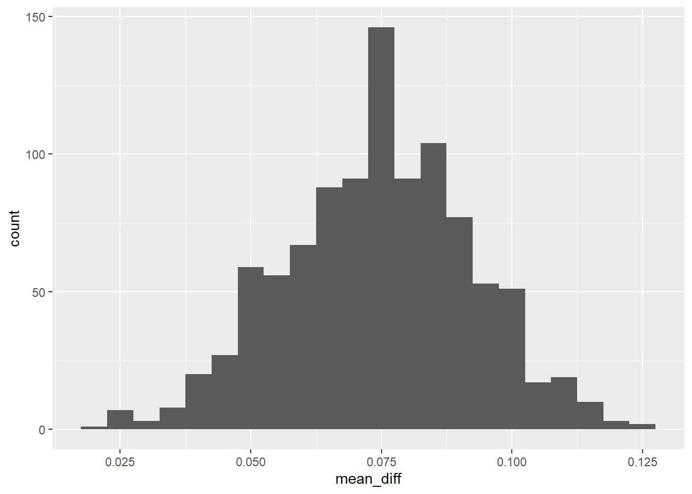
#To get the bootstrap percentile confidence interval, #
#start by ranking the bootstrap means from smallest to largest #
rankmean<-sort(boot.samples$mean_diff)
#Lower endpoint is the 2.5th percentile (95% confidence)#
lower<-rankmean[25]
lower[1] 0.03863636#Upper endpoint is the 97.5th percentile (95% confidence)#
upper<-rankmean[975]
upper[1] 0.1113636#Bootstrap standard error of the mean#
sd(rankmean)[1] 0.01852526
What would happen if we (incorrectly) ignored the pairing? Let’s find a 95% confidence interval, assuming the two samples are independent.
##INCORRECT ANALYSIS##
#Set up an empty data set with 4 columns: simulation number, bootstrap mean for narrow, bootstrap mean for wide, difference#
boot.samples<-data.frame(sim=1:1000,mean_narrow=NA,mean_wide=NA,diff=NA)
#For each row in the data set, draw a bootstrap sample from the original data and find#
# mean_narrow and mean_wide#
for(i in 1:1000){
boot.samples$mean_narrow[i]<-mean(sample(bases$narrow,size=22,replace=TRUE))
boot.samples$mean_wide[i]<-mean(sample(bases$wide,size=22,replace=TRUE))
boot.samples$diff[i]<-boot.samples$mean_narrow[i]-boot.samples$mean_wide[i]
}
#Histogram#
boot.hist<-ggplot(boot.samples, aes(diff)) + geom_histogram(binwidth=0.05)
#See the plot#
boot.hist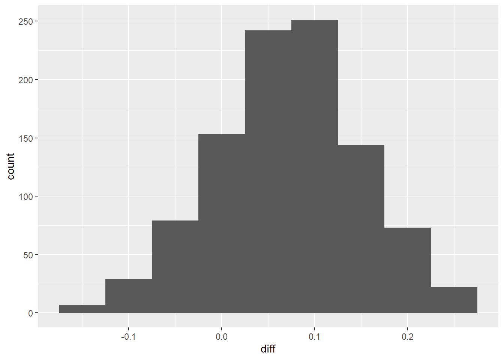
#To get the bootstrap percentile confidence interval, #
#start by ranking the bootstrap means from smallest to largest #
rankmean<-sort(boot.samples$diff)
#Lower endpoint is the 2.5th percentile (95% confidence)#
lower<-rankmean[25]
lower[1] -0.07954545#Upper endpoint is the 97.5th percentile (95% confidence)#
upper<-rankmean[975]
upper[1] 0.2295455
The hardest part is determining whether we are dealing with independent samples or matched pairs. Let’s talk through 21.2, 21.3, 21.4, and 21.5
The mathematical model approach to matched pairs is the same as the one sample analysis, but carried out on differences. The changes come in the form of the hypotheses and interpretation of the confidence interval.
We still need to check conditions!
Example: A study carried out by Cai et al. (2019) aimed to determine whether laugh tracks make dad jokes seem funnier. The researchers had a professional comedian record 40 dad jokes. They had people listen to the jokes and rate how funny they were on a 7 point scale, with 1 being not funny at all and 7 being extremely funny. Other people listened to the same 40 jokes, but this time the researchers added a laugh track to the recording. The volunteers were randomized to either no laugh track or laugh track.
Here are the observed statistics:
| Laugh Track? | \(n\) | Sample mean | Sample SD |
|---|---|---|---|
| With | 40 | 3.010 | 0.490 |
| Without | 40 | 2.715 | 0.507 |
| Diff=with-without | 40 | \(\bar x_d=0.295\) | \(s_d = 0.427\) |
Hypothesis test:
90% confidence interval:
We can also do this in R, adding paired=TRUE to the t.test code. Let’s try it with the base running data.
t.test(bases$narrow,bases$wide,paired=TRUE)
Paired t-test
data: bases$narrow and bases$wide
t = 3.9837, df = 21, p-value = 0.0006754
alternative hypothesis: true mean difference is not equal to 0
95 percent confidence interval:
0.03584814 0.11415186
sample estimates:
mean difference
0.075 We’re going to start this section by considering an example. The data are in the file ‘mice.csv.’
Example: These data come from an experiment to determine if exercise confers some resilience to stress. Mice were randomly assigned to either an enriched environment (exercise wheel) or standard environment, and spent three weeks there. After that time, they were exposed for five minutes per day for two weeks to a “mouse bully”–a mouse very strong, aggressive, and territorial. After those two weeks, anxiety in the mice was measured, as amount of time hiding in a dark compartment. Mice that are more anxious spend more time in darkness. We want to determine if there is a difference in time spent in darkness for the two groups of mice.
mice<-read.csv("mice.csv",header=TRUE)
head(mice) Envr Time
1 Enrich 259
2 Enrich 280
3 Enrich 138
4 Enrich 227
5 Enrich 203
6 Enrich 184We already know how to answer this research question!
Let’s first plot the data
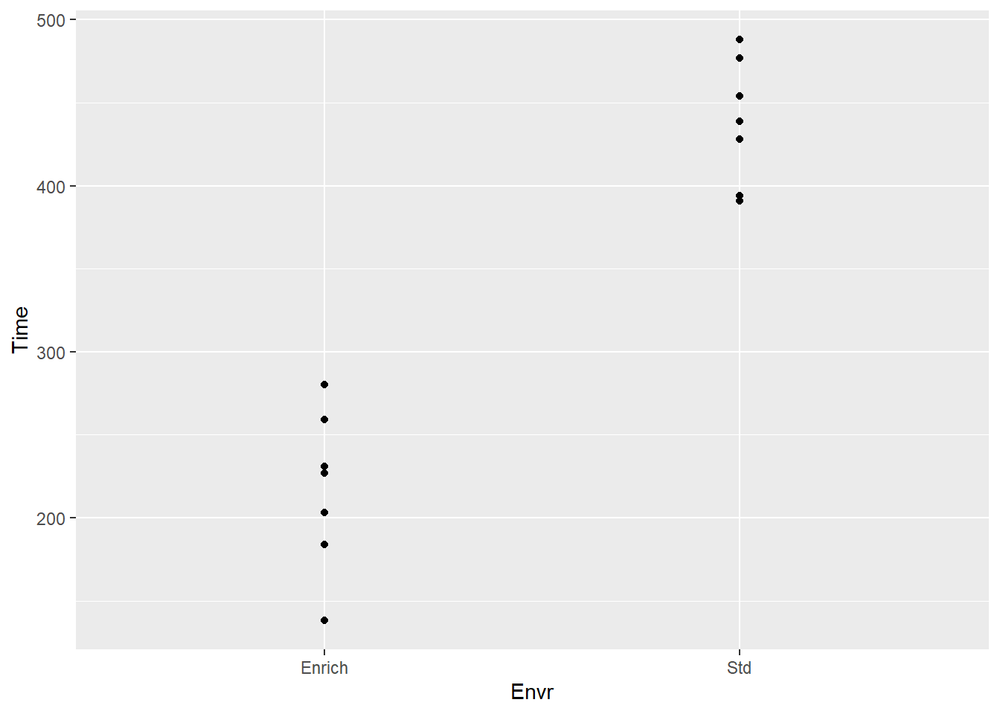
It definitely looks like there’s a difference between the groups! We can find the group means and standard deviations. We’ll also add the sample means to the plot.
aggregate(mice$Time, by=list(mice$Envr), FUN=mean) Group.1 x
1 Enrich 217.4286
2 Std 438.7143aggregate(mice$Time, by=list(mice$Envr), FUN=sd) Group.1 x
1 Enrich 47.52844
2 Std 37.68162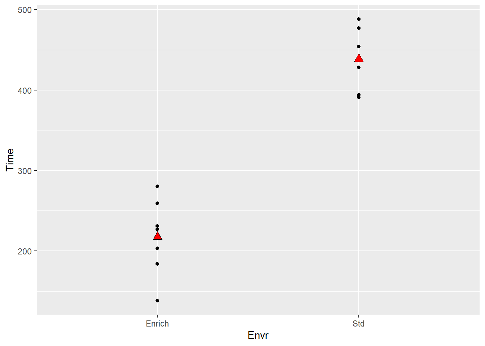
We’re testing H\(_0: \mu_1 = \mu_2\), and assume this is true to construct the test. The overall common sample mean is \(\bar x = 328.07\).
t.test(Time~Envr,data=mice)
Welch Two Sample t-test
data: Time by Envr
t = -9.6526, df = 11.407, p-value = 7.885e-07
alternative hypothesis: true difference in means between group Enrich and group Std is not equal to 0
95 percent confidence interval:
-271.5245 -171.0470
sample estimates:
mean in group Enrich mean in group Std
217.4286 438.7143 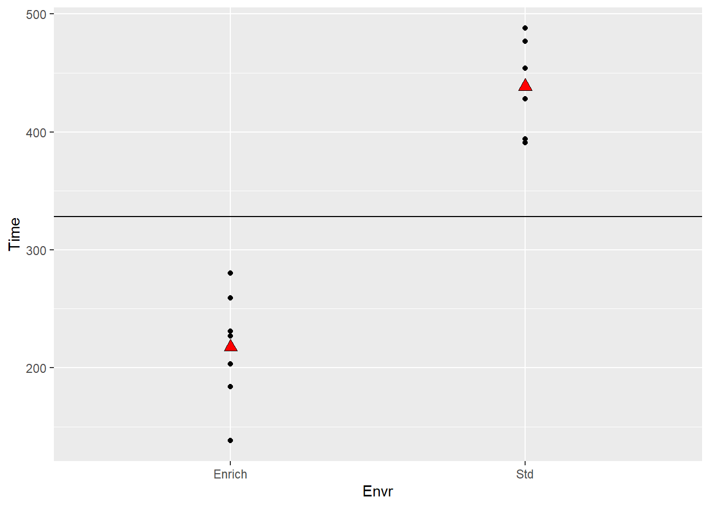
It turns out the difference between the two groups will also manifest itself in the variances. There will be variation between the group means and the overall mean, as well as variation between the data points and their group means.
Remember how sample variance is calculated:
We’re exploring how far, on average, observations are from the mean (squared). So, variance has to be positive. If there is a difference between the group means, the first kind of variation (between the group means and the overall mean) will be much greater than the second kind of variance (between the data points and their group mean). We can test whether the first variance is bigger than the second using an \(F\) statistic, just like we did in the last section when we were comparing two variances:
\[ F = \frac{\hbox{variance between group means and overall mean}}{\hbox{variance between the data points and their group mean}} \]
If the variances are about equal, there’s no evidence of a difference between the group means–they vary as much from the overall mean as data points vary from their group mean. This will result in an \(F\) statistic of about 1. If there is a difference between the group means, the first kind of variation (between the group means and the overall mean) will be much greater than the second kind of variance (between the data points and their group mean). This will result in an \(F\) statistic greater than 1.
For the mice data:
Notice!
We made some assumptions to carry out the \(t\)-test:
We can summarize these assumptions very succinctly, and to do so we’re going to introduce some new notation.
Consider a random sample of observations from a normal distribution with mean \(\mu\) and variance \(\sigma^2\). If we let \(Y_1, Y_2,\dots, Y_n\) represent our data points we can summarize this as:
Or another way:
This is a statistical model with 2 parameters: \(\mu\) and \(\sigma^2\).
If we have two samples:
If we have more than two samples:
Let’s start with some summary statistics \[\begin{eqnarray*} Y_{i\cdot} &=& \sum_{j=1}^{n_i} Y_{ij} = i^{th} \hbox{ sample total} \\ \bar Y_{i\cdot} &=& \frac{1}{n_i} \sum_{j=1}^{n_i} Y_{ij} = i^{th} \hbox{ sample mean} \\ Y_{\cdot \cdot} &=& \sum_{i=1}^{t} \sum_{j=1}^{n_i} Y_{ij} = \hbox{ grand total} \\ \bar Y_{\cdot \cdot} &=& \frac{1}{N} \sum_{i=1}^{t} \sum_{j=1}^{n_i} Y_{ij} = \hbox{ grand mean } (N=\sum_{i=1}^{n_i} n_i) \end{eqnarray*}\]
Example: A student carried out an experiment to investigate handwashing methods: water only, regular soap, antibacterial soap, and alcohol spray. Each treatment was replicated 8 times, and bacteria count was observed. The data are in ‘handwash.csv’.
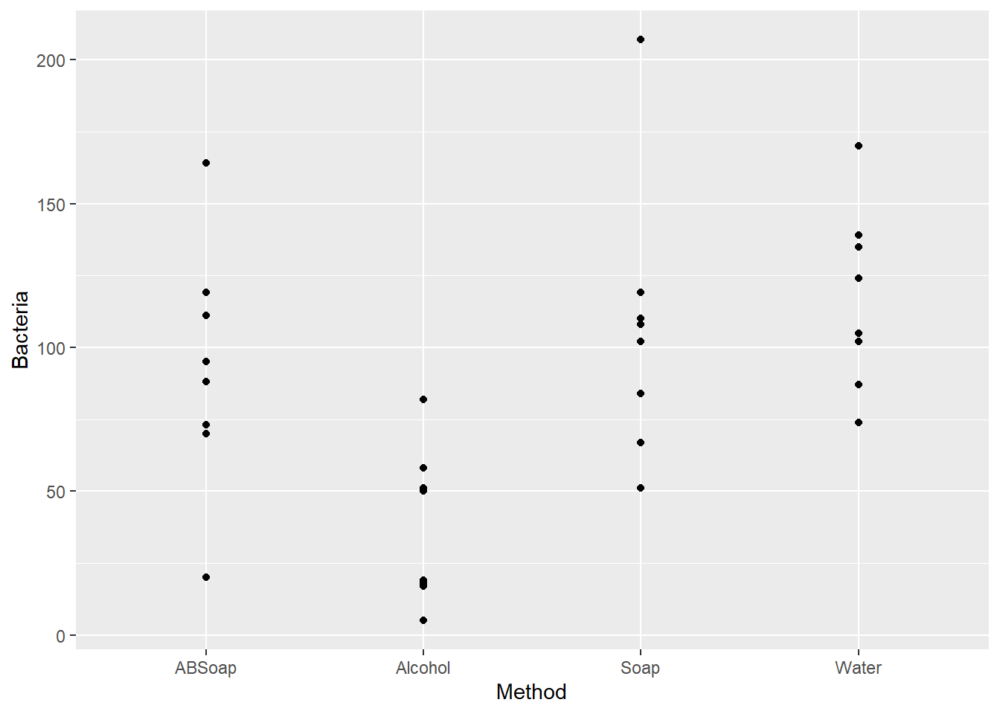
Group.1 x
1 ABSoap 92.5
2 Alcohol 37.5
3 Soap 106.0
4 Water 117.0 Group.1 x
1 ABSoap 41.96257
2 Alcohol 26.55991
3 Soap 46.95895
4 Water 31.13106
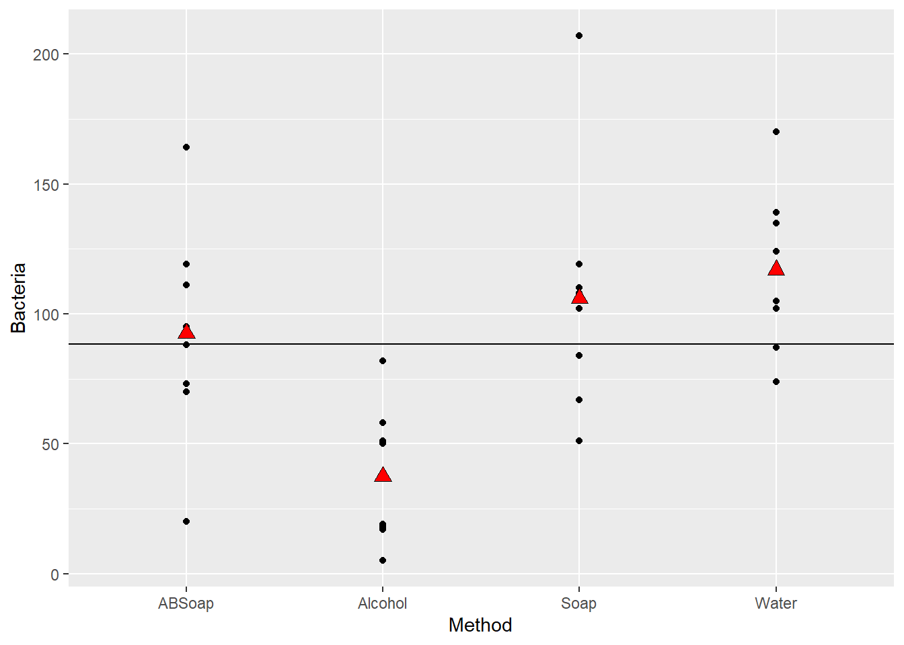
Remember how to calculate the sample variance, \(S^2 = \frac{\sum_{i=1}^n (y_i - \bar y)^2}{n-1}\). We’re going to look at three difference variances. Let’s assume for simplicity that \(n_i = n\) (all groups have equal sample size, this is not really necessary, it’s just to make it easier to look at notation):
To see what this is measuring, first consider the ‘inside’ sum:
This is still an estimate of variance, but it’s an estimate of \(\sigma^2/n\), because these are means. In order to be able to compare fairly to the error variance we must multiply by \(n\) (only works with equal sample sizes) or, equivalently, take the sum from \(j=1\) to \(n\):
We can’t lose sight of what we’re interested in here: testing H\(_0: \mu_1 = \mu_2\). If H\(_0\) is true, \(\bar y_1\) and \(\bar y_2\) should not be different from \(\bar y_{\cdot \cdot}\). This means that error variance should be about equal to model variance (both would estimate \(\sigma^2\)). If H\(_0\) is not true, model variance will be larger because of the deviations of the group averages from the grand average. If it’s much larger, this gives us evidence against H\(_0\).
Why do we worry about three variances when we only use two (error and model) to get the \(F\) stat? It turn out that: \[ \hbox{Total SS } = \hbox{Model SS } + \hbox{ Error SS} \] For the mice data:
\[\begin{eqnarray*} \hbox{Total SS } &=& (259-328.07)^2 + \cdots + (231-328.07)^2 + (394-328.07)^2 + \cdots + (454-328.07)^2 = 193459 \\ \hbox{Error SS } &=& (259-217.43)^2 + \cdots + (231-217.43)^2 + (394-438.71)^2 + \cdots + (454-438.71)^2 = 22073 \\ \hbox{Model SS } &=& 6(217.43-328.07)^2 + 6(438.71-328.07)^2 = 171386 \\ \end{eqnarray*}\]
To convert these sums of squares into variances (which we call mean squares), they must be divided by denominators noted above. These are degrees of freedom, and have the same relationship as the sums of squares do: \[ \hbox{Total } df = \hbox{ Model } df + \hbox{ Error } df \]
In our mice example, we have
\[
\hbox{Total } df = \hbox{ Model } df + \hbox{ Error } df
\]
We often summarize our calculations in a table (\(df\) assuming equal sample sizes):
| Source | \(df\) | SS | MS |
|---|---|---|---|
| Model | \(t-1\) | SSModel | MSModel |
| Error | \(t(n-1)\) | SSError | MSError |
| Total | \(nt-1\) | SSTotal |
The MSError (usually called MSE) is our estimate of \(\sigma^2\). In our mice example, we get the table:
| Source | \(df\) | SS | MS |
|---|---|---|---|
| Model | 1 | 171386 | 171386 |
| Error | 12 | 22073 | 1839 |
| Total | 13 | 193459 |
To test H\(_0: \mu_1 = \mu_2\) we use the F stat: \[ F = \frac{\hbox{MSModel}}{\hbox{MSError}} = \frac{171386}{1839} = 93.2 \] and we can add this to the table:
| Source | \(df\) | SS | MS | F |
|---|---|---|---|---|
| Model | 1 | 171386 | 171386 | 93.2 |
| Error | 12 | 22073 | 1839 | |
| Total | 13 | 193459 |
What we’ve just done is called an Analysis of Variance (ANOVA), and the resulting table is called an ANOVA table. It’s a single hypothesis test to check whether the means across many groups are equal. Specifically, it’s testing:
We still have assumptions: - Independence between and among groups - Responses/errors are approximately normal - Variability across groups is about equal
We still don’t know if 93.2 is enough greater than 1 to determine there’s a difference! We have two options:
Randomization test: Like for two means, write all responses on cards. Shuffle, and deal into as many stacks as there are groups with stack size corresponding to group size. Find \(F\) for the shuffle. Repeat many times, and see how unusual our observed \(F\) statistic is. We can do this in the applet or in R.
Mathematical model: \(F\) Test
Assuming H\(_0\) is true and the assumptions are met, \(F\) follows and \(F\)-distribution with \(df_1 = t-1\) and \(df_2 = N-t\) (\(N\) is the total number of observations). We can use pf() in R to find p-values
pf(93.2,df1=1,df2=12,lower.tail=FALSE)[1] 5.232224e-07The p-value typically gets added to the table as well:
| Source | \(df\) | SS | MS | F | p-value |
|---|---|---|---|---|---|
| Model | 1 | 171386 | 171386 | 93.2 | 0.0000005 |
| Error | 12 | 22073 | 1839 | ||
| Total | 13 | 193459 |
This is the only time we’ll do an ANOVA by hand! Let’s do the same in R.
anova(lm(Time~Envr, data=mice))Analysis of Variance Table
Response: Time
Df Sum Sq Mean Sq F value Pr(>F)
Envr 1 171386 171386 93.173 5.24e-07 ***
Residuals 12 22073 1839
---
Signif. codes: 0 '***' 0.001 '**' 0.01 '*' 0.05 '.' 0.1 ' ' 1Example: Let’s now carry out the ANOVA on the handwashing data. We’ll start by writing the model and sketching the ANOVA table.
anova(lm(Bacteria~Method,data=handwash))Analysis of Variance Table
Response: Bacteria
Df Sum Sq Mean Sq F value Pr(>F)
Method 3 29882 9960.7 7.0636 0.001111 **
Residuals 28 39484 1410.1
---
Signif. codes: 0 '***' 0.001 '**' 0.01 '*' 0.05 '.' 0.1 ' ' 1We’ll do some more examples, focusing on sketching the ANOVA table.
Example: A teacher takes a random sample of 30 student GPAs, along with where they chose to sit in a classroom (front, middle, back). We want to see if mean GPA differs based on where a student sits.
Example: Baseball run time. The data gives run time in seconds for 50 yards for 29 players at three different positions (OF, IF, C).
A group of college students wanted to see whether there was an association between students’ major and the time (in seconds) to complete a small paper-and-pencil puzzle. They took a random sample of 40 students, and they grouped majors into four categories: applied science (as), natural science (ns), social science (ss), and arts/humanities (ah).